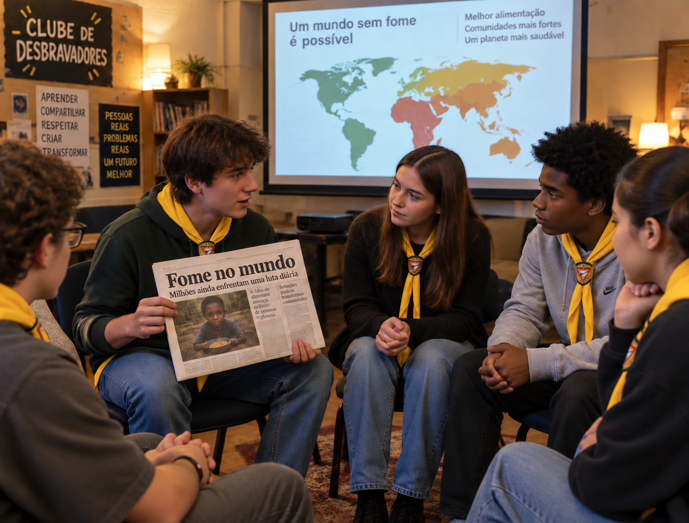
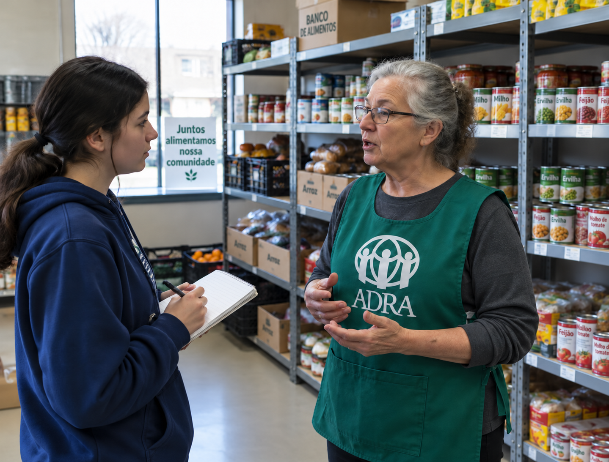
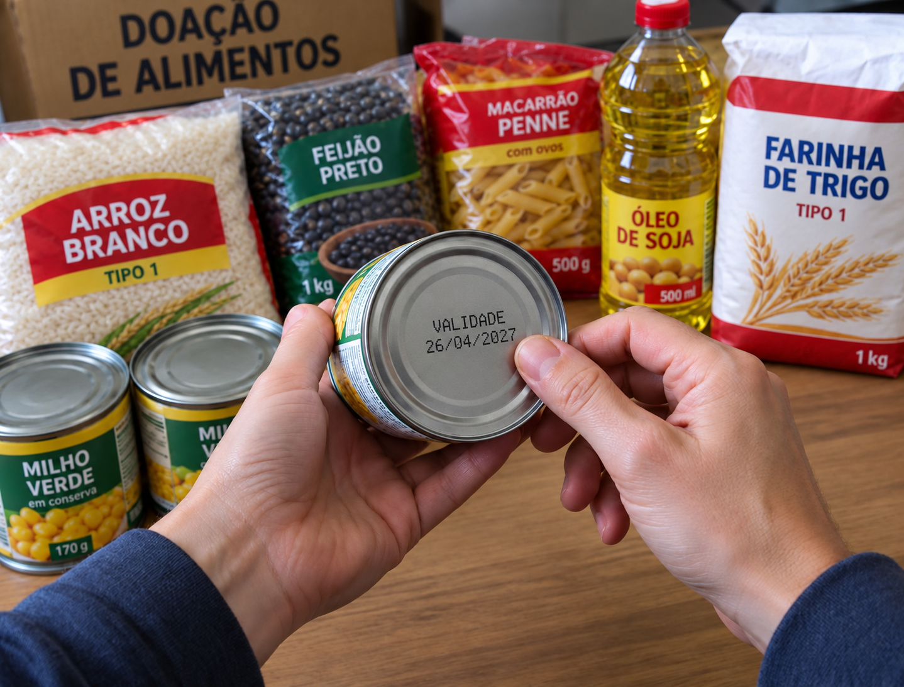
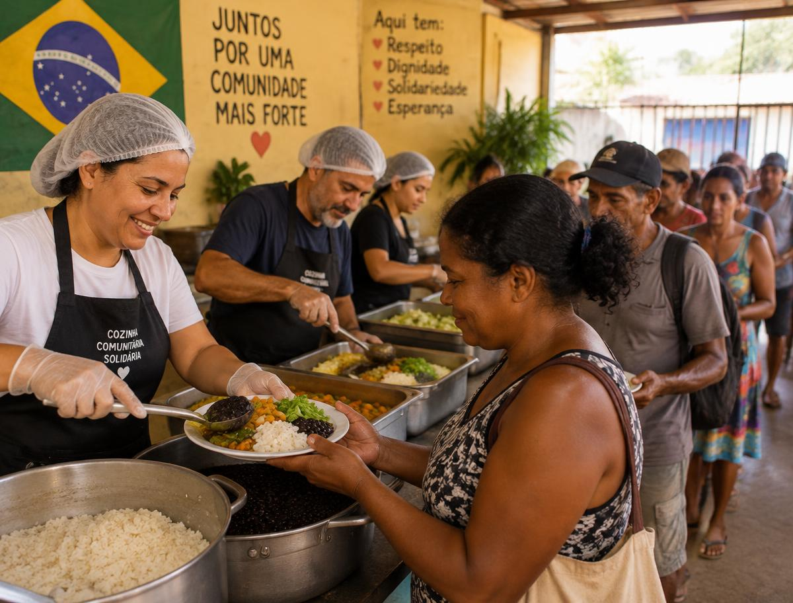

Ninguém deveria dormir com fome. Conheça as causas, ouça quem está na linha de frente e coloque as mãos na massa — literalmente.
pessoas passaram fome no mundo em 2024 — cerca de 1 em cada 12 habitantes do planeta.
de pessoas vivem em insegurança alimentar moderada ou grave, sem acesso regular a comida suficiente.
de todo o alimento produzido no mundo é perdido ou desperdiçado entre a lavoura e o prato.
ano em que o Brasil voltou a sair do Mapa da Fome da ONU, após ter retornado em 2022.

AssistaO primeiro passo é se informar: ler ou assistir a um documentário ou reportagem sobre a fome no mundo e discutir com a sua unidade. Boas sugestões são “Ilha das Flores” (1989, curta de Jorge Furtado), “Garapa” (2009, José Padilha), “Histórias da Fome no Brasil” (2017) e as reportagens anuais da FAO sobre o relatório SOFI.
“Repartas o teu pão com o faminto, e recolhas em casa os pobres desamparados… então romperá a tua luz como a alva.”Isaías 58:7–8
O Brasil é um dos maiores produtores de alimentos do planeta, mas, em 2022, a Rede PENSSAN estimou que 33 milhões de brasileiros passavam fome. O paradoxo mostra que a fome raramente é falta de comida: é falta de acesso. Já em 1946, o médico pernambucano Josué de Castro, no livro Geografia da Fome, mostrou que ela é um problema social e político, não natural.
A principal causa. Milhões de famílias não têm renda para comprar comida suficiente, mesmo com prateleiras cheias.
Sem trabalho estável, a renda oscila e a alimentação é a primeira a ser cortada.
Inflação de itens básicos, como arroz, feijão, óleo e carne, reduz o poder de compra das famílias.
Estiagens no semiárido nordestino, enchentes e eventos extremos destroem lavouras de pequenos agricultores.
Grande parte das terras produz commodities para exportação; o agricultor familiar, que produz a maior parte da comida do dia a dia, tem pouco espaço e apoio.
O Brasil está entre os países que mais desperdiçam: perdas na colheita, no transporte, nos mercados e em casa.
Baixa escolaridade limita oportunidades; doenças e falta de saneamento pioram a desnutrição.
A pandemia de COVID-19 e a redução de programas sociais fizeram a fome crescer rapidamente entre 2020 e 2022.
Periferias e áreas rurais isoladas sem mercados que vendam alimentos frescos a preço justo.

Procure quem distribui alimentos na sua comunidade: o líder da ASA (Ação Solidária Adventista) da sua igreja ou de outra igreja, ou de um centro ou restaurante comunitário. Agende com antecedência, apresente-se como desbravador e explique que é para a especialidade.
Normalmente são atendidas famílias de baixa renda, mães sozinhas com filhos, idosos com aposentadoria insuficiente, pessoas desempregadas ou doentes e pessoas em situação de rua. As causas costumam ser perda de emprego, doença, separação, endividamento e alto custo de vida. As necessidades são supridas com cestas básicas, refeições prontas, encaminhamento a programas sociais e acompanhamento das famílias.

50+Organize uma arrecadação para a ASA da sua igreja, de outra igreja, ou para um centro/restaurante comunitário. Se não for possível, escolha uma família que precisa de ajuda e entregue a ela os itens. A meta sugerida é de pelo menos 50 alimentos não perecíveis.
Respeite os costumes da região: produtos desconhecidos ou fora da alimentação do dia a dia tendem a ser mal aproveitados. No Brasil, arroz e feijão são reis.

Visite um banco de alimentos, centro de distribuição, restaurante popular ou cozinha comunitária e ofereça-se como voluntário. Ajude a descarregar, separar, embalar, cozinhar ou servir. Se não houver nenhum por perto, planeje e ajude a ASA em uma arrecadação.
É o Dia Mundial da Alimentação, data da fundação da FAO, a agência da ONU para alimentação e agricultura, em 1945.
A insegurança alimentar vai da preocupação de faltar comida (leve) até passar o dia sem comer (grave). A fome é o nível mais extremo.
Em 1993, o sociólogo Herbert de Souza fundou a Ação da Cidadania contra a Fome, a Miséria e pela Vida, que mobilizou o país inteiro.
A Agência Adventista de Desenvolvimento e Recursos Assistenciais atua em mais de 100 países com ajuda humanitária e combate à fome.
É a falta de vitaminas e minerais, como ferro e vitamina A. A pessoa pode até comer o suficiente, mas ainda estar desnutrida.
O Programa Mundial de Alimentos (PMA) ganhou o Nobel da Paz por combater a fome e evitar o seu uso como arma de guerra.
Cascas de banana, talos de couve e sementes de abóbora são nutritivos e podem virar bolos, farofas e sopas.
A lei de Moisés mandava deixar os cantos da lavoura para os pobres e estrangeiros colherem (Levítico 19:9–10).
“Porque tive fome, e destes-me de comer…” (Mateus 25:35). Cada lata arrecadada, cada hora de voluntariado e cada prato sem desperdício é uma forma de servir a Deus servindo ao próximo.